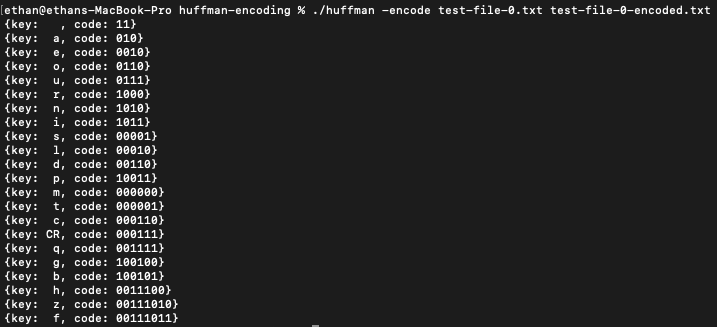

This was an in-class project for my Data Structures 2 course. We were tasked with using lexical analysis to first analyze a text file and then, after determining how many of each character appeared, we built a Huffman tree. Once our tree had been built, we re-encode the original file by switching every character with its new Huffman equivalent. This project features classes, file input, and file manipulation. To the right, you can see a sample output of the program after it has analyzed the characters and has created a Huffman tree of the characters. You can find more information about huffman coding here.
